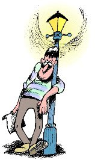
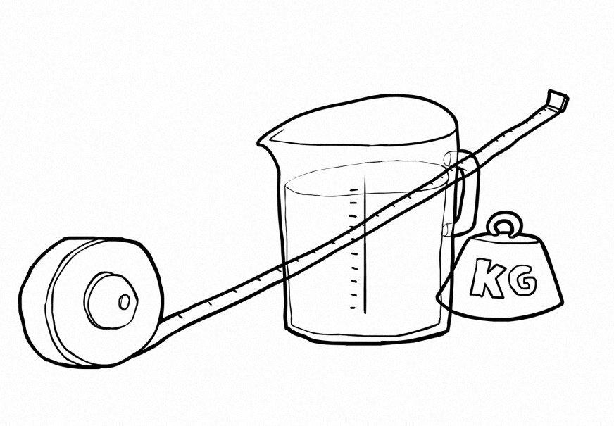
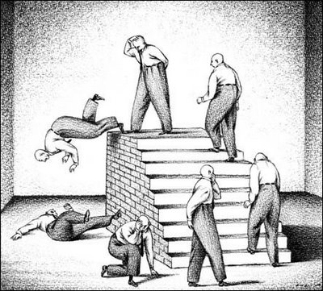

Introducción a la estadística
Versión PDF
II-1120 Estadística para Ingeniería Industrial I
steven.garciagoni@ucr.ac.cr
18 de febrero de 2026
Agenda
- Preguntas generadoras
- Rol de la estadística
- Conceptos estadísticos
- Ética y estadística
- Métodos de recolección de datos
- Errores más comunes en la recolección de datos
- Tipos de estudios existentes
Preguntas generadoras
- ¿Por qué estudiar estadística?
- ¿Cuáles tipos de estadística existen?
- ¿Cuáles variables hay?
- ¿Con qué niveles de medición?
- ¿Qué fuentes de datos existen?
- ¿Cuales son los errores más comunes en la recolección de datos?
- ¿Cuándo utilizar cada tipo de estudio en estadística?
- ¿Cuál es la relación que existe entre la estadística y el comportamiento ético?
Estadística
- Disciplina que recopila, procesa y analiza datos para realizar conclusiones para la toma de decisiones.
- Forma parte de una rama científica con el objetivo de formular, aplicar teoría y métodos específicos para poder adquirir, organizar, examinar y darle sentido a datos numéricos derivados de observaciones o experimentos aplicados a diferentes situaciones.
- La disciplina estadística nos enseña cómo realizar juicios inteligentes y tomar decisiones informadas en presencia de incertidumbre y variación.
- La estadística ofrece los procedimientos para recolectar y transformar los datos de manera que sean útiles a quienes toman decisiones.
¿Por qué estudiar estadística?
Relevancia

- Es una materia que se encuentra en la mayoría de planes de estudios (Ciencias sociales, Ingeniería, Administración, Ciencias básicas, etc.). ¿Por qué razón?
- La información numérica prolifera por todas partes.
- Se requiere estadística para tomar decisiones y además, proporciona un entendimiento de como afectarían.
- Ayuda a determinar el tipo de información requerida para tomar decisiones
- Por ejemplo, ¿los datos disponibles son suficientes y adecuados o se requiere información adicional?
¡Importante!
- ¿En qué se diferencia la estadística de cada plan de estudios?
- La estadística es una herramienta, NO un objetivo
- El contexto define el propósito de la estadística. Cada uno tiene sus propias necesidades, preguntas y limitaciones y esto influye en cómo se aplican las técnicas estadísticas.
- Los resultados estadísticos deben interpretarse en función del contexto. Un mismo dato puede tener implicaciones MUY diferentes dependiendo de la situación.
- Sin contexto, la estadística puede ser malinterpretada o incluso manipulada para respaldar conclusiones erróneas.
En ingeniería…
La estadística es una herramienta esencial para analizar datos, mejorar y automatizar diseños, procesos y sistemas.
Además de garantizar la eficiencia y confiabilidad en proyectos y sistemas.
Sin importar el área de especialización (manufactura, calidad, metrología, energía, ambiente, robótica y automatización, entre otros) es necesario el conocimiento estadístico.
Estamos inundados de datos… las personas que son capaces de analizar esta nueva información son y serán valiosos en prácticamente cualquier campo de estudio.
Without data, you’re just another person with an opinion - W. Edwards Deming
Entonces…
En resumen
La estadística es una herramienta poderosa, pero su verdadero valor se obtiene cuando se aplica de manera adecuada y se interpreta dentro de un contexto específico.
Sin contexto, los datos y los análisis estadísticos carecen de significado y utilidad práctica.
It’s easy to lie with statistics, but it’s hard to tell the truth without them - Andrejs Dunkels
Teoría, hipótesis y contexto
Para Babbie (2000) una teoría es una explicación sistemática de los hechos y leyes observadas que se relacionan con un aspecto específico de la vida.
Organizan las observaciones y les asignan un sentido. A menudo las expectativas comprenden la idea de causalidad (Dado un evento A -> Ocurre un evento B).
Las teorías no deben confundirse con una opinión
Ejemplos
General

- Mediante una encuesta, se obtiene que el 90 % de las personas con baja educación son prejuiciosos y que el 30 % de las que tienen mayor educación también lo son. Es decir, que el 70 % no tienen prejuicios.
- La hipótesis sería que “algo” en la educación es la causa de que la persona sea prejuiciosa o no. La determinación de ese “algo” es la teoría asociada al contexto.
Específico

- En una fábrica de ensamble de relojes, se hipotetiza que dividir una tarea compleja en partes más pequeñas y asignar cada parte a una persona o equipo especializado aumenta la productividad.
- Hay teorías que sostienen esta afirmación y que pueden estudiarse/comprobarse con el uso de la estadística, mediante un experimento u observación, por ejemplo.
¡Importante!
Las personas ingenieras deberían usar a la estadística como un borracho usa un poste de luz eléctrica, más para apoyo que para iluminación

Conceptos básicos
Variable
- Característica de los objetos o de los individuos
- Pueden ser:
- Explicativas
- Respuesta o de interés
Población
- Todos los miembros de un grupos acerca de los cuales se desea obtener una conclusión
Muestra
- Una parte de la población seleccionada para análisis
Conceptos básicos
Parámetro
- Medida numérica que describe una característica de la población
Estimador
- Medida numérica que describe alguna característica de la muestra
Sesgo
- Cuando el método de recopilación de datos hace que los datos de la muestra reflejen incorrectamente la población.
Conceptos básicos
Estadística descriptiva
- Métodos para organizar, resumir y presentar datos de manera informativa.
Estadística inferencial
- Métodos que se emplean para determinar una propiedad de una población con base en la información de una muestra de ella.

Tipos de variables
- Se clasifican en cuantitativa y cualitativa.
- Las variables cuantitativas se pueden dividir en:
- Cuantitativa discreta
- Cuantitativa continua
- Cuando la característica que se estudia es de naturaleza no numérica recibe el nombre de variable cualitativa o atributo.
- Género, color de ojos, marca de celular, etc.
- Si la variable que se estudia aparece en forma numérica, se le denomina variable cuantitativa.
- Salario, edades, cantidad de hijos
- Durante el desarrollo del curso se explayan estas definiciones.
Niveles de medición

- Los datos se clasifican por niveles de medición.
- El nivel de medición y el tipo de variable rige los cálculos que se llevan a cabo con el fin de resumir y presentar los datos.
- Es decir, que no todos los tipos de datos se analizan igual.
- Esta premisa es sumamente importante en el desarollo de estos cursos. Pues no puede aplicar los cálculos e interpretaciones de índole estadístico indiscriminadamente.
- Cada nivel de medición superior tiene las propiedades de los anteriores.
- Es decir, el nivel de medición razón, incluye las propiedades del intervalo, ordinal y nominal; y así sucesivamente.
Niveles de medición
Nominal
- Las observaciones solo se clasifican y se cuentan
- No existe una forma particular de ordenar las etiquetas
- Los datos solo se clasifican
- Marca de un vehículo
- Color de la vestimenta
Ordinal
- Las observaciones tienen un orden
- Las clasificaciones de los datos se encuentran representadas por conjuntos de etiquetas que tienen valores relativos.
- Los datos se ordenan
- Posición de la UCR en el ranking QS
- Calificación en Malo, Regular y Bueno
Niveles de medición
Intervalo
- Diferencias iguales en la característica representan diferencias iguales en las mediciones
- La diferencia entre los valores tiene un significado
- Temperatura en °C
- Talla
Razón
- El punto cero representa la ausencia de características y la razón entre dos números es significativa
- El cero tiene un significado (la ausencia de)
- Número de pacientes
- Distancia de su casa a la universidad
Actividad
- Recuerde que las variables se pueden clasificar en tipos (la naturaleza del dato) y niveles de medición (qué operaciones matemáticas tienen sentido). Por ejemplo:
- La edad es una variable que puede recolectarse como un valor númerico: 25 años o en rangos: 0-10 años, 11-20 años, …; en el primero caso el nivel de medición es razón y en el segundo es ordinal.
- Realice el ejercicio que se muestra a la derecha de su pantalla.
Clasifique cada variable según tipo y nivel de medición
| Cuantitativo | Cualitativo | |
|---|---|---|
| Nominal | ||
| Ordinal | ||
| Intervalo | ||
| Razón |
El quehacer ético en la estadística
La estadística debe practicarse con integridad y honestidad, “haciendo lo correcto” cuando se recoja, organice, resuma, analice e interprete información numérica.
- Este tema se abordará repetidamente a lo largo del curso.
La contribución real de la estadística a la sociedad es de naturaleza moral.
Cuando se practique la estadística, es necesario mantener “un punto de vista independiente y con principios”.
Lo aquí recopilado son extractos de “Statistics and Ethics: Some Advice for Young Statisticians. Se aconseja su lectura (Acceso provisto por SIBDI).
Ética en el aprendizaje
- El comportamiento ético también se manifiesta mediante la integridad académica.
- El consenso general es que la integridad académica es elaborar y presentar un trabajo original.
- Si no se garantiza la integridad académica, la idea de que un egresado cuenta con los conocimientos necesarios para desempeñar su profesional por el hecho de contar un diploma queda en entredicho.
- Esto incluye evitar el plagio (deliberado o no), así como hacer un uso responsable y ético de la IA.
- Cuando use IA, declárelo y detalle el proceso que siguió para llegar a la respuesta.
Fuentes de datos
Fuentes de datos
- La forma en la que se recolectan/obtienen los datos influye en el tipo de conclusiones que pueden extraerse.
- Identificar las fuentes de datos apropiadas es un aspecto importante del análisis estadístico.
- Si los sesgos, ambigüedades u otros tipos de errores estropean los datos recolectados, ni el método estadístico más complejo producirá información útil y precisa.
Fuentes de datos
- En algunos casos los datos que se necesitan para una determinada aplicación ya existen, por ejemplo, las empresas cuentan con diversas bases de datos sobre sus empleados.
- También se pueden obtener de organizaciones externas especializadas en la recolección y almacenamiento de datos.
- En otras ocasiones, los datos necesarios para una aplicación particular no se pueden obtener de las fuentes existentes.
- En tales casos los datos suelen conseguirse realizando estudios estadísticos, con el uso de instrumentos de medición (balanzas, cintas métricas, encuestas, etc).
Fuentes de datos
- Las fuentes de datos se clasifican en fuentes primarias y secundarias.
- Cuando la persona recolectora de datos es quien los emplea para análisis, la fuente es primaria.
- Cuando una organización o individuo ha compilado los datos que utiliza otra organización o individuo la fuente es secundaria.
- En su ejercicio académico y profesional, usted debe enfrentarse a fuentes de datos secundarias y a diseñar y aplicar métodos y técnicas para la recolección de datos primarios.
- ¿Cuales fuentes secundarias conoce en CR?
- INEC, por ejemplo.
- ¿Otros?
- Iniciativa de datos abiertos (Decreto Ejecutivo 40199-MP)
- INEC, por ejemplo.
Errores comunes al adquirir datos
- Falta de claridad en el objetivo de la recolección de datos
- Seleccionar mal la población o la muestra
- Incluyendo la cantidad de unidades muestreadas
- No tomar en cuenta leyes y reglamentos sobre datos sensibles
- Preguntas mal formuladas (sesgadas o confusas)
- Inconsistencias en la metodología de recolección
- Falta de entrenamiento de quien recolecta el dato
- Errores de digitación

Algunos tipos de estudios
Estos son relevantes, pues del tipo de estudio dependen las conclusiones a las que se puede arribar con el ejercicio estadístico.
Transversales:
- Los datos se recopilan en un solo momento del tiempo
- Describen características en un punto específico
Longitudinales:
- Recopilan los datos de un mismo sujeto en múltiples momentos durante un periodo de tiempo
- Analiza cambios o tendencias a lo largo del tiempo
¡Crucigrama de repaso!
Bibliografía
- Walpole, R.; Myers, R.; Myers, S. y Ye, K. Probabilidad y estadística para ingeniería y ciencias (9na Edición).
- Capítulo 1
- Lind, D.; Marchal, W. y Watchen, S. Estadística aplicada a los Negocios y la Economía (15va Edición).
- Capítulo 1
- Devore, J. Probabilidad y Estadística para Ingeniería y Ciencias (7ma Edición).
- Capítulo 1
- Levine, D.; Krehbiel, T.; Berenson, M. Estadística para administración (4ta Edición).
- Capítulo 1
- Vardeman, S. B., & Morris, M. D. (2003). Statistics and Ethics: Some Advice for Young Statisticians. The American Statistician, 57(1), 21–26. https://doi.org/10.1198/0003130031072
- Lock, R.; Lock, P.; Morgan, K.; Lock, E. & Lock, D. Statistics: Unloking the Power of Data (3rd Edition).
- Capítulo 1